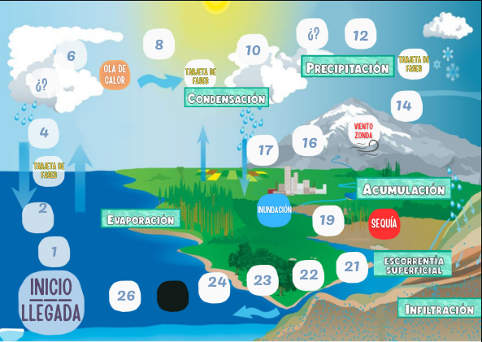

¿Quiénes juegan?
Elegí cuántos jugadores van a tirar el dado (podés jugar pasando el mismo dispositivo por turnos).

Turno de
—
Jugadores
Bitácora del juego
¿Qué significa cada casilla especial?
❓
Pregunta
Respondé sobre el ciclo del agua.
📇
Tarjeta de frase
Completá la frase con la palabra correcta.
🔥
Ola de calor
La evaporación se acelera: avanzás 3 casillas.
🌬️
Viento Zonda
El viento seco te empuja: retrocedés 4 casillas.
🌊
Inundación
El agua desborda: retrocedés 3 casillas.
☀️
Sequía
No hay agua disponible: perdés el próximo turno.
⚫
Pozo
Quedás atrapado bajo tierra: perdés el próximo turno.
🏁
Llegada
Casilla 26: ¡el agua volvió al mar! Si te pasás, rebotás.